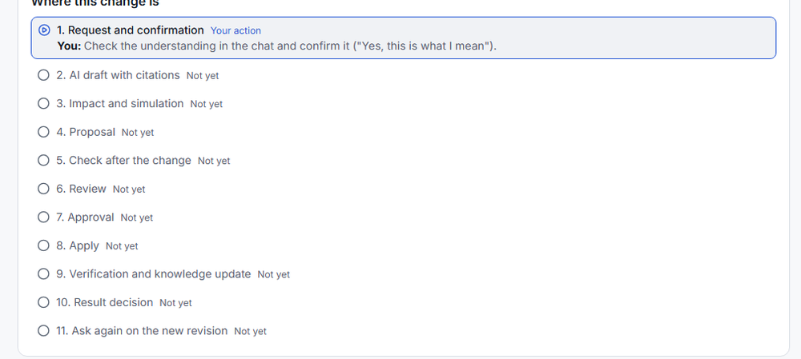

One-role guide: raise a manager approval threshold
This scenario is A. Try it yourself. It is independent of the recorded four-role case (a different rule, baseline and run).
Scenario summary
Business objective
Let a requester raise the standard manager approval threshold in plain words and see, before anything is applied, what would change and what stays unresolved.
Baseline
Live approval.yaml: standard_manager_threshold_jpy = 500,000 JPY (read 2026-10-13).
Proposed change
500,000 → 800,000 JPY, in approval.yaml only. Proposed, not applied; a judge can never apply it.
Still unresolved
workflow.yaml, procurement_policy.md (they state a manager limit of 1,000,000), approval_matrix.xlsx (rows around 500,000) and requisition_sop.md stay open as unresolved or potentially affected.
Measured (simulation, deterministic)
35 of 240 sample requisitions change, all NEEDS_MANAGER → AUTO. Separate from the AI's reading, which is an interpretation, not a measurement.
Verification status
Recorded live result exact request → confirmed understanding (1 AI job, no clarification). Limitation draft → proposal evidence comes from an earlier run with different wording and a manual fallback. Not yet verified the exact request through draft → proposal.
Acceptance
None. The run ends at Waiting for the approver; nothing is approved or applied.
Business problem
Harbor sends a standard purchase requisition to a manager only above a threshold. The configuration the program reads (approval.yaml) says 500,000 JPY; workflow.yaml and procurement_policy.md say manager approval starts at 1,000,000 JPY, and approval_matrix.xlsx has its own rows around 500,000. Changing the number is easy to say and hard to do safely: which requisitions change route, and which other statements disagree?
Your mission
Act as a requester. State the change in plain words, make Ripple restate it, confirm it, and take it to a proposal that waits for a reviewer and an approver. You never apply anything.
Baseline
Starting point. This walkthrough uses a specific starting baseline. If earlier changes have been applied in this workspace, the sample values and expected results may no longer match. Check the current source revision and values before starting. For subsequent runs, follow the same workflow using the latest data.
This guide does not apply anything (a judge cannot), so following it never changes the source. The values here are the guided example. If the value you read in the Explorer is no longer 500,000, keep the same workflow, use the value you read as the "current value" in your request and a new value you choose; the simulation and the AI's wording will then differ from the example, which is expected.
Recorded live resultstandard_manager_threshold_jpy = 500,000, capex_finance_threshold_jpy = 1,000,000 (read on 2026-10-13 through the AI's comparison with stored rules and the simulation's baseline check, and re-read before the exact-request check).
Limitation The statements in workflow.yaml and procurement_policy.md (1,000,000) come from the Harbor bundle copy of those files, not from a fresh live read.
Before you start, the page re-checks the baseline; if the workspace has moved, trust the numbers on screen.
The request to type
Please raise the standard manager approval threshold from 500,000 JPY to 800,000 JPY in the approval configuration. Keep this change limited to approval.yaml and keep any other source that states a manager threshold visible as unresolved.
If copying does not work, select the text above and copy it by hand (Ctrl+C / Cmd+C).
This is a raise: fewer requisitions will need a manager.
Proposed change and simulated effect
Proposed change not applied
approval.yaml → standard_manager_threshold_jpy
500,000 → 800,000 JPY
Status: proposed. A judge account can never apply it; the run ends waiting for a reviewer and an approver.
Simulated effect Recorded live result
Requisitions by route (240 public samples): 35 move NEEDS_MANAGER to AUTO. Highlighted rows changed.
Route
Before
After
AUTO
58
93
NEEDS_MANAGER
109
74
NEEDS_FINANCE
61
61
NEEDS_DIRECTOR
6
6
REJECTED
6
6
Stored measurement, job ui-simulation-98fb78b9e07e49c9, baseline reproduced 240/240. It is the effect of the proposed value on Harbor's own program, not an edit of any source.
Still unresolved
workflow.yaml and procurement_policy.md state a manager limit of 1,000,000.
approval_matrix.xlsx has routing rows around 500,000 (potentially affected).
requisition_sop.md was left open by the draft.
Not simulated: the simulation does not read these files.
What was run, and what was not
Recorded live result A judge account walked the whole path on the deployed UI on 2026-10-13: request → clarification → confirm → draft → impact → simulation → AI reading → proposal. It stopped at "waiting for the approver"; direct calls for extraction, review and apply were refused (403); no review/approve/apply button was shown; another judge account could not read the chat.
Limitation That run typed a different request ("lower ... from 1,000,000 to 800,000") that used a wrong baseline. The AI correctly pointed out that the stored value is 500,000 and asked which is current; the second metered reply of that run repeated the wrong value, so the run used "Edit the details myself" (manual fallback) to continue. The fallback proves the rest of the path; it does not prove that the AI understands the request above.
Recorded live result The exact request above was then run through the AI by a second judge account (fresh conversation, 1 AI job, 1 provider call, 0.0155 USD, about 18 s). The AI returned a READY understanding with no clarification: subject standard manager approval threshold, current 500,000 and new 800,000, both quoted from your words, JPY. The sentence about limiting the change to approval.yaml and keeping other sources unresolved was recorded as a note only - the system does not enforce it (the page said "Applies to: not known yet"). The preview was confirmed and the run stopped there.
Not yet verified Draft, impact, simulation, AI reading and proposal were not repeated with this exact request.
Steps
Each card shows what to do and what to expect. Open Observed result, evidence and caveats for the recorded result of that step. Steps marked AI use the metered quota.
Step 1 - Open Ripple and choose a change
LimitationJudge actionRecorded live result
Role: judge (requester-like). AI: no.
ActionJudge action: open Ripple (button at the top), sign in with the judge account you were given, pick the workspace, then in the left menu open Changes. To start a new conversation arrive at Changes from another page (for example Overview, then Changes): there is no "New request" button, and clicking Changes while you are already on it only reloads the change that is open.
Expected: the page shows "No change is selected" and your My work list (a chooser); the card 1. Request and confirmation has an empty chat box and Send; there is no Where this change is card and no Your request card.
Observed result, evidence and caveats
Continue when: the address ends with #/ws/<workspace>/changes (no chat=, intent= or draft=). If an older change is shown, go to another page and back to Changes. Do not use Open in My work: it reopens an existing change.
Optional check of the baseline: left menu → Explorer → type approval.yaml in Search → open the file, then the rule about the standard manager threshold. Recognise it by Taken from: approval.yaml and Value (500,000 expected), not by its name, which the AI chose and may differ. Quotes under "Where it came from" are hidden for a judge by design.
ObservedRecorded live result: chooser visible on first load.
CaveatLimitation: if AI steps are refused with "evaluation window", the service is not open; nothing is charged.
Step 2 - Type the request and read the preview
LimitationJudge actionRecorded live resultAI step - uses quota
Role: judge. AI: yes, one metered reply.
ActionJudge action: copy the request above, paste it into the chat box and click Send (Enter in the box also sends at once; Shift+Enter adds a line).
Expected: a card "This is what I understood": subject = standard manager approval threshold, current 500,000, new 800,000, JPY; the first line says nothing is recorded until you confirm.
Observed result, evidence and caveats
ObservedRecorded live result: exact request → READY card in about 18 s (worker already warm); the earlier, different request needed about 41 s including a cold worker start and two clarifications.
CaveatLimitation: the "limit this change to approval.yaml" sentence is recorded only, not enforced.
Continue when: the card heading is "This is what I understood" and current/new values read 500,000 and 800,000. Check the "from your words" lines under each value.
Optional branches (not the main path; each AI reply is metered): if the heading is "I still need some details", answer with real data (for example "The current value is 500,000 JPY") in the Your answer box. If the AI cannot settle it, Edit the details myself → current 500000, new 800000 → Check my edits is deterministic (no AI) but is a fallback, not the intended path.
Step 3 - Confirm
Judge actionRecorded live result
Role: judge. AI: no.
ActionJudge action: two separate confirmations. (1) In the chat card click Yes, this is what I mean; a check box ("I have checked what the AI assumed and what is left out of this request") appears only when the AI listed assumptions or "not covered" items, and then must be ticked first. (2) The saved request has the status "Saved - waiting for the person who made it to confirm the request"; click Confirm intent in stage 1.
Expected: after (1) a Your request card and a Where this change is card appear; after (2) stage 1 shows Confirmed.
Observed result, evidence and caveats
Continue when: the status reads Confirmed.
ObservedRecorded live result: preview confirmed (exact request, conversation CONFIRMED). Confirm intent and later steps come from the earlier run: confirmed within seconds.
Step 4 - Generate the draft
Not yet verifiedJudge actionRecorded live resultAI step - uses quota
Role: judge. AI: yes, one metered job.
ActionJudge action: stage 2 AI draft with citations → Generate GenAI draft.
Expected: PARTIAL or COMPLETE; one supported edit (500,000 → 800,000); open points listed; no raw source text for your role.
Observed result, evidence and caveats
ObservedRecorded live result (earlier run): 15 s; PARTIAL; one edit; open items for approval_matrix.xlsx (shown as potentially affected), workflow.yaml, procurement_policy.md, requisition_sop.md.
Continue when: the status reads Done, and one "Proposed edit" for approval.yaml shows 500000 → 800000. PARTIAL is expected: it means some parts stay with people.
Check: nothing that the AI left out disappears; each open item has a kind (unresolved, potentially affected, outside this request).
Optional paths (not needed for the main path; each can use more AI):Revise this draft with confirmed feedback, Ask the AI to suggest (per open point) and, in stage 3, Ask the AI to look at up to 3 files.
CaveatNot yet verified with the exact request.
Step 5 - Impact and simulation
LimitationJudge actionOffline expectationRecorded live result
Role: judge. AI: no (deterministic).
ActionJudge action: stage 3 → Run impact analysis, then Run simulation.
Expected: 240 requisitions, baseline reproduced, a count of changed requisitions.
Observed result, evidence and caveats
ObservedRecorded live result: impact 18 s, simulation 4 s: 35 changed (NEEDS_MANAGER → AUTO), 0 emergency rows; job ui-simulation-98fb78b9e07e49c9. Offline expectation the same 35 from Harbor's shipped data.
CaveatLimitation: the simulation runs Harbor's own program only; edits to workflow.yaml, documents or the workbook are not simulated.
Step 6 - Read the AI's reading
Judge actionRecorded live resultAI step - uses quota
Role: judge. AI: yes, one metered job.
ActionJudge action: Ask the AI to read this simulation (uses the paid model).
Expected: a reading labelled "AI interpretation, not a measured fact", shown apart from the measures.
Observed result, evidence and caveats
ObservedRecorded live result: 26 s (earlier run).
Step 7 - Build the proposal
Judge actionRecorded live result
Role: judge. AI: no.
ActionJudge action: stage 4 → check that the approval.yaml line is ticked (proposed edits are ticked by default; clicking a ticked line un-ticks it) → Prepare the proposal with the ticked edits. One proposal covers one file; press it once.
Expected: the exact diff of approval.yaml; "Left for people" lists the open items (not resolved by the proposal).
Observed result, evidence and caveats
ObservedRecorded live result: 5 s (earlier run).
Step 8 - Stop: waiting for the approver
Recorded live result
Role: judge. AI: no.
Action: none - read who is next, on the same Changes page.
Expected: the Next card at the top reads "Waiting for: An approver (not the requester) must state the check after the change"; row 5. Check after the change in Where this change is says Waiting; stage 5 shows "Suggested check (waiting for an approver)". My work lists the same item. No review, approve or apply button is offered.
Observed result, evidence and caveats
Continue when: nothing more for a judge. The proposal is not applied; the source file is unchanged.
ObservedRecorded live result: exactly that (earlier run). End of the guide. To see what happens after a proposal, read the recorded four-role case (a different change with its own baseline).
How to verify, independent of the AI's wording
Scope and values match your words; each claim has a status; sources you did not touch stay visible; numbers come from the measured simulation and the interpretation is labelled; raw quotes are hidden for your role; nothing after the proposal is offered to you.
Supporting references
Measured timings are single samples, not guarantees: worker start about 6 s after a request; 14-23 s for a simple job; the Scheduler backstop recovered a missed wake-up in 178 s in one sample.

Illustration only: the stage list of one change as a requester sees it before confirming, from an earlier 2026-10-10 run (a different request); not evidence of this guide's run.